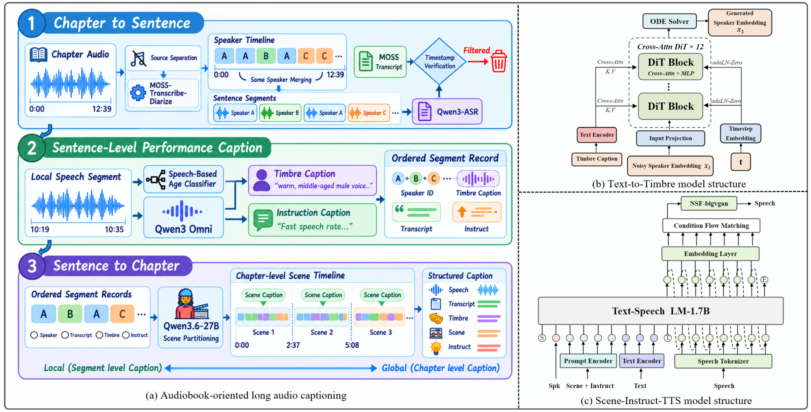

摘要
专业有声书录音为角色音色与富有表现力的演播提供了丰富的范例。然而，为其做 caption 标注需要在粒度与上下文之间权衡：章节级标注往往只能产生粗粒度的描述，片段级标注则容易丢失周围的叙事语境。为此，我们提出 local-to-global captioning 流水线：先逐段分析语音片段，再利用其按时间排序的转写与 caption 推断章节级场景上下文。该流水线沿音色、文本、场景、演播四个维度对每个片段进行标注。这些标注将声音表演与周围叙事关联起来，且无需一次性对整章音频进行标注。我们用这些标注训练了 Text-to-Timbre（由音色描述生成说话人嵌入）与 Scene-Instruct-TTS（由叙事场景与演播指令合成语音）。人工评估显示，我们的系统在角色匹配度（3.72）与语境适切性（3.86）上均取得对比系统中最高的平均分。

主要贡献
- 面向有声书的音频标注。我们提出 local-to-global 标注流水线，沿音色、文本、场景、演播四个维度对每个语音片段进行标注，分别刻画角色的声音、所说内容、叙事语境与表达方式；并引入领域自适应的年龄分类器改进感知年龄标注。
- 细粒度的文本到音色生成。我们提出 Text-to-Timbre（TTT）模型，可由详细的音色描述生成说话人嵌入；其交叉注意力机制以 token 级文本信息为条件，使模型能够捕捉描述中包含的多种声音属性。
- 面向有声书合成的 Scene-Instruct-TTS。我们以预训练 TTS 骨干网络为基础构建 Scene-Instruct-TTS，使其同时以说话人嵌入、转写文本、场景描述与演播指令为条件，生成与指定角色及叙事语境相匹配的语音。
1. 音色设计展示（Voice Design）
7 组样例。组内 5 个系统使用同一条音色描述与同一段合成文本，对比音色还原度与听感。
Moss-VG: MOSS-VoiceGenerator Ours w/ Text Pooling: pools the token-level text features into a single vector Qwen3-TTS-VD: Qwen3-TTS-12.5hz-VoiceDesign-1.7B VoxCPM2: VoxCPM2 Ours: Ours（金色高亮）
音色描述音调偏低、低沉沙哑的老年男声，沧桑内敛、饱含阅历，适合人生纪实节目或岁月回忆旁白。
回头看去，那些走过的弯路，也早已成为人生的一部分。
Moss-VG
Ours_w_pool
Qwen3-TTS-VD
VoxCPM2
Ours
音色描述音调适中、清雅从容的中年女声，端庄知性、气质优雅，适合文化品牌代言或人文内容旁白。
美并非浮于表面，它源于内在修养与经年累月的沉淀。
Moss-VG
Ours_w_pool
Qwen3-TTS-VD
VoxCPM2
Ours
音色描述音调较高、语气神气十足的男孩嗓音，正义感强、爱扮英雄，适合英雄主题动画或男童玩具广告。
别害怕，超级小队长来了，我一定会保护大家！
Moss-VG
Ours_w_pool
Qwen3-TTS-VD
VoxCPM2
Ours
音色描述音调适中、坚定热忱的少年男声，青春昂扬、正直向上，适合励志成长短片或正能量宣传。
也许我们现在还不够强大，但努力会让梦想一点点靠近。
Moss-VG
Ours_w_pool
Qwen3-TTS-VD
VoxCPM2
Ours
音色描述音调偏低、磁性浑厚的青年男声，深沉性感、富有魅力，适合男士护理广告或成熟向影视配音。
无需刻意证明，真正的魅力，自会在细节中显现。
Moss-VG
Ours_w_pool
Qwen3-TTS-VD
VoxCPM2
Ours
音色描述音调适中、慈和温暖的中年女声，温柔亲切、包容体贴，适合家庭温情广告或母婴健康内容。
成长不必着急，我们会用耐心陪伴孩子走好每一步。
Moss-VG
Ours_w_pool
Qwen3-TTS-VD
VoxCPM2
Ours
音色描述音调适中、柔和苍老的老年女声，慈祥温暖、朴实自然，适合民间故事或亲子传承类有声书。
从前啊，村口有一棵大槐树，树下藏着许多旧时光。
Moss-VG
Ours_w_pool
Qwen3-TTS-VD
VoxCPM2
Ours
2. Caption消融及对比展示
5 组样例。组内 6 条音频由同一段文本在三种描述配置（无 / 仅指令描述 / 场景 + 指令描述）下合成，对比场景与指令描述对演播表现力与场景匹配度的作用。
VoxCPM2：无附加 caption VoxCPM2-I：仅 instruction caption VoxCPM2-SI：scene + instruction captions
Ours w/o S-I：无 caption Ours w/o S：仅 instruction caption Ours：scene + instruction captions（完整版）
Ours w/o S-I：无 caption Ours w/o S：仅 instruction caption Ours：scene + instruction captions（完整版）
“我觉得对房地产，我有兴趣，也有敏感度。”“所以我下定决心，要到这个行业里面去。”
scene安静环境中，两人进行深度交流，一方讲述个人成长背景与职业选择，整体氛围感性且略带沉重，演播保持生活化与情感流露。
instruct语气坚定，语速平稳，表达有条理，略带思考停顿，情绪平稳且自信。
instruct语气坚定，语速平稳，表达有条理，略带思考停顿，情绪平稳且自信。
VoxCPM2
VoxCPM2-I
VoxCPM2-SI
Ours w/o S-I
Ours w/o S
Ours
小晨晨看着妹妹撒欢似的身影，像是被刚从羊圈里放出来的小羊羔一样，皱了皱眉，刚准备说两句，但是随即一想，这是幼儿园，应该没有危险，算了。
scene幼儿园户外场景，旁白描述孩子们见面互动，穿插儿童角色的轻快对话，整体氛围轻松活泼、充满童趣，演播保持生活化与角色声线的自然切换。
instruct语气平稳，语速适中，尾音柔和，表达略带犹豫和自我劝解的意味。
instruct语气平稳，语速适中，尾音柔和，表达略带犹豫和自我劝解的意味。
VoxCPM2
VoxCPM2-I
VoxCPM2-SI
Ours w/o S-I
Ours w/o S
Ours
“想法不错，可惜呀。在绝对的实力面前，雕虫小技又有何用？”
scene敌军指挥官分析战况并下达命令，语气自信傲慢，氛围沉稳中带有压迫感，演播保持威严叙述与低沉对话的平稳切换。
instruct语调平稳，略带嘲讽和不屑，尾音上扬，语速缓慢，表达出居高临下的态度。
instruct语调平稳，略带嘲讽和不屑，尾音上扬，语速缓慢，表达出居高临下的态度。
VoxCPM2
VoxCPM2-I
VoxCPM2-SI
Ours w/o S-I
Ours w/o S
Ours
无须道谢，这都是我应该做的，只是不知姐姐，还有什么吩咐
scene庭院及室内环境中，人物进行恭敬且略带紧张的交流，整体氛围庄重克制，演播保持沉稳叙述与对话的平稳切换。
instruct语气平稳，略带恭敬和试探，语速适中，尾音柔和。
instruct语气平稳，略带恭敬和试探，语速适中，尾音柔和。
VoxCPM2
VoxCPM2-I
VoxCPM2-SI
Ours w/o S-I
Ours w/o S
Ours
可是呢，这种性质极其恶劣的碎尸案，早一天侦破，就能早一天消除社会影响，对大众也有一个交代。因此，刘德民并不正面答应吴校长的话，而是说。
scene室内对话收尾，警方拒绝请求并离开，氛围由紧张转为平静，演播保持客观陈述与动作描写的平稳过渡。
instruct语调平稳，语速偏慢，表达正式，带陈述语气，情绪克制，尾音略上扬。
instruct语调平稳，语速偏慢，表达正式，带陈述语气，情绪克制，尾音略上扬。
VoxCPM2
VoxCPM2-I
VoxCPM2-SI
Ours w/o S-I
Ours w/o S
Ours
3. 有声书长音频 Caption 展示（句级 · 时间轴对齐）
本节展示对有声书长音频的逐句 caption 标注。原音频约 12 分钟，出于篇幅考虑截取其中约 4.9 分钟（49 句、4 个说话人、3 个场景）展示。每句话均标注字幕、音色描述与演播指令，并与时间轴对齐；点击任意片段定位试听，点击场景组头播放整组。
▷ 尚未播放，点击任意片段开始
■ 说话人 0 ｜ ■ 说话人 2 ｜ ■ 说话人 3 ｜ ■ 说话人 4
场景 5室内客厅环境，长辈做出让步姿态，晚辈惊喜离开，整体氛围由紧张转为缓和，演播保持平稳叙述与对话。
字幕那些所谓的幸福感和甜蜜感，填满了心中的一切，导致他们什么也听不进去，什么也看不进去。他们一心只想着跟对方在一起，哪怕吃糠咽菜，前途一片黑暗，也无所畏惧。
音色音调适中的年轻女性嗓音，鼻共鸣略带气息感，声音温柔治愈，适合有声书旁白
instruct语气平稳，语速缓慢，尾音略带沉降，表达中带着克制的伤感和坚定。
字幕上官曦就是一个很典型的例子。她是一个可以为了爱什么都不顾的人。人生在世，总要疯狂一次。
音色音调适中的年轻女性嗓音，带有轻微气息感，声线沉稳且磁性十足，适合演绎知性女主播或剧情类旁白
instruct语速缓慢，语气平静，尾音轻柔上扬，整体表达带有一丝感慨和温柔。
字幕上官老太太很清楚上官曦的性子，如果她一次性拒绝到底的话，上官曦难免会走上极端的路。她叹了口气道：
音色音调适中的青年女性嗓音，略带气息感与沉稳余韵，声音温柔坚定，适合有声书旁白
instruct语气平静，语速适中，尾音平稳，表达中性且略带无奈的情绪。
字幕小溪呀，你让我再想想。
音色老年女性声线略带沙哑与气泡音，鼻腔共鸣明显，情绪略带悲伤，适合演绎沉稳慈祥的长辈角色
instruct语气平静，语速缓慢，尾音上扬，表达一种犹豫和思索的情绪。
字幕闻言，上官曦眼前一亮。
音色鼻腔共鸣显著的年轻女性声线，略带惊喜感，清亮甜润，适合古风小说旁白
instruct情绪平静，语速平稳，语气自然，略带一丝惊喜的语调。
字幕奶奶您同意了。
音色一位少年女性音调高亢、鼻腔共鸣明显，音色清亮甜润，充满惊喜感，适合动漫或游戏角色中的天真少女
instruct情绪惊喜，语速快，尾音上扬，表达方式为轻快的询问。
字幕上官老太太道
音色青年女性嗓音，音调适中并带轻微气息感，声线平和温婉，适合有声书旁白
instruct语气平稳，语速适中，正式且略带叙述感，声音沉稳。
字幕同不同意现在还不能给你答案，等我想好了再告诉你。
音色老年女性音调沉稳、沙哑略带撕裂感，声线磁性坚定，适合演绎沉稳严肃的领导角色
instruct语气平稳，略带迟疑和保留，语速偏慢，尾音轻柔。
字幕只要上官老太太愿意让步，就代表这件事情有希望了。上官曦笑着道。
音色音调适中的青年女性嗓音，发音饱满稳定无杂质，语气平静自信，适合演绎古风剧旁白或有声小说
instruct语气平静，语速平缓，尾音轻柔，情绪克制，带有一丝希望感。
字幕嘿，那奶奶您一定要好好的想想，左琳真的是个不可多得的好孙女婿，嫁给他，我永远不会后悔的。
音色鼻音偏重、音调清亮的年轻女性嗓音，略带甜腻气息，充满撒娇感，适合萌系甜宠女主配音
instruct情绪兴奋，语气恳切，语速适中，尾音上扬，表达带有撒娇和劝说的风格。
字幕行了行了。
音色音色平滑的老年女性嗓音，共鸣集中且语速平缓，适合演绎家庭剧里的长辈角色
instruct语气略带不耐烦和制止感，语速中等，尾音略微下沉。
字幕上官老太太摆摆手。
音色青年女性嗓音，鼻共鸣适中，略带沙哑且圆润温润，适合作为传统家庭剧或历史题材旁白
instruct语气平静，语速缓慢，尾音平稳，表达克制。
字幕你出去吧，我和你小姑还有事情要说。
音色音调适中的老年女性嗓音，略带沙哑且沉稳，情绪低沉严肃，非常适合演绎家庭伦理剧中权威型长辈角色
instruct语气平静但坚定，带有不容置疑的命令感，语速略慢，尾音平稳。
字幕上官曦一边说着，一边往外走。
音色音调适中的年轻女性嗓音，圆润平滑无杂质，声线干净利落，适合有声书旁白或影视剧角色配音
instruct语气平稳，语速适中，语调自然。
字幕那我先走了，奶奶，您什么时候想好了，什么时候告诉我。
音色清亮的少女音色，鼻共鸣明显、略带气流感，语调柔和温和，自带温柔懂事感，适合动漫少女角色
instruct语调轻柔，语速适中，尾音上扬，表达委婉且带有请求意味。
场景 6室内环境，长辈与晚辈私下商议对策，透露已有安排，整体氛围沉稳且带有神秘感，演播保持低声叙述与对话。
字幕上官曦走后，上官老太太叹了口气。
音色成熟稳重的青年女性嗓音，带有胸腔共鸣与轻微气息，沉静温柔且略带伤感，适合家庭剧旁白
instruct语气平静，语速舒缓，尾音略微下沉，表达出一种无奈和伤感的情绪。
字幕唉，小谢这孩子的性子，真是越来越像她妈了。
音色温润成熟的老年女性嗓音，气息平缓略带鼻腔共鸣，温暖治愈且沉稳，非常适合出演暖心长辈
instruct叹息语气，语速缓慢，尾音下沉，表达无奈与感慨。
字幕当年的徐芬甚至比上官曦还要疯狂。他们都是为了爱不顾一切的人。
音色青年女性音色，平和沉稳、气息柔和，声音温暖磁性，适合有声书讲述
instruct语调平稳，语速偏慢，语气略带感叹和感慨，表达一种回顾与总结的意味。
字幕上官芙蓉点点头，感叹道。
音色沉稳平和的青年女性嗓音，发音清晰且气息柔和，充满叙事感染力，适合影视剧旁白或有声书演播
instruct语气平稳，语速偏慢，尾音略带感叹意味，整体表达克制而沉稳。
字幕是啊，一晃眼，小希都这么大了。可有些事情，就像是昨天才发生的一样。
音色青年偏中年的女性嗓音带有轻微气息感，温暖治愈且略带感性，适合暖心妈妈
instruct语气舒缓，语调平和，尾音上扬，带有感慨和怀念的情绪。
字幕说到这里，上官芙蓉话锋一转，接着道。
音色音调适中的年轻女性嗓音，发音清晰平稳、共鸣自然，适合演播有声小说或电台广播
instruct语气平稳，语速中等，略带叙述感，音调轻柔，表达沉稳。
字幕不过妈，您真的打算同意小谢和左凛在一起吗？
音色音色清亮圆润的年轻女性嗓音，略带气息感，鼻腔共鸣，适合演绎家庭剧的女配角
instruct语调略带疑问和迟疑，语速平稳，尾音上扬，表达出试探和不确定的情绪。
字幕我是他亲奶奶，我能眼睁睁地看着他往火坑里跳啊。
音色老年女性嗓音，胸腔共鸣显著、音调中等，充满担忧与无奈，适合出演亲情剧或家庭情感题材中的慈爱长辈
instruct情绪激动，语速中等偏慢，尾音上扬，语气充满质问和担忧，表达出长辈的强烈情感。
字幕上官老太太反问。
音色青年女性嗓音，鼻腔共鸣略带气息感，冷静克制，适合有声书演播
instruct语调平稳，语气正式，带有反问的意味。
字幕您这是缓兵之计。
音色音调适中的年轻女性嗓音，鼻共鸣清晰、声带略带挤压感，语调沉稳冷静，适合演绎古风权谋剧中的女谋士角色。
instruct语气冷静克制，语速平稳，尾音稍轻，带有试探和质疑的意味。
字幕上官芙蓉问道。
音色音调适中的年轻女性嗓音，圆润清亮且自然，适合演绎古风剧旁白
instruct语气平稳，语速适中，带有疑问的语气。
字幕上官老太太点点头。
音色鼻共鸣偏高的青年女性嗓音，声音低沉温柔，适合旁白演播
instruct语气平和，语速平稳，尾音轻微上扬，表达平静且带有一丝肯定。
字幕嗯，小信那孩子，有时候性子非常极端，要是不这样说的话，我怕他会做出什么惊天动地的大事儿。
音色老年女性嗓音，略带气流感且声线低沉，听起来沉稳而富有磁性，适合演绎严肃稳重的长辈角色。
instruct语气深沉，语速缓慢，尾音略带担忧和感叹，表达出一种忧虑和劝诫的情绪。
字幕上官芙蓉轻叹一声。
音色音色沉稳中带气息的年轻女性嗓音，声线温柔治愈，略带伤感，适合有声书或情感类内容旁白
instruct语气平静，语速舒缓，尾音轻微上扬，略带一丝无奈和感叹。
字幕唉，可这样下去也不是个办法呀。
音色声线平滑、气息柔和的年轻女性嗓音，带有轻微鼻音共鸣，温柔而略带伤感，适合青春剧女配角
instruct情绪为无奈、叹息，语速缓慢，尾音拖长并上扬，表达出无力和犹豫的语气。
字幕总不能一直拖着吧。
音色青年女性音调适中、音色沉稳饱满，带点无奈的撒娇感，适合职场女性
instruct语气略带不满和无奈，语速中等，尾音上扬，带有疑问和轻微抱怨的口吻。
字幕上官老太太抬头看向窗外。
音色音调适中的青年女性嗓音，鼻腔共鸣明显、气息轻盈，听起来沉稳温柔，适合有声书旁白
instruct语气平稳，语速适中，略带叙述感，情绪平静。
字幕等晚上燕燕回来了，我跟她商量下。那孩子聪明点子最多了。
音色老年女性嗓音带有轻微气息感，音色温厚柔和，适合饰演慈爱的长辈角色
instruct语气平和，语速缓慢，尾音略带拖长，表达商量和肯定的意味。
字幕晚上霓烟回来之后，上官老太太就迫不及待地将霓烟拉到自己房间，和霓烟说起了上官曦的事情。
音色鼻音共鸣适中的年轻女性嗓音，声音轻柔平稳，讲述故事时有治愈感，适合有声书或温柔旁白场景
instruct语速平稳，语气平静，略带叙述感，尾音轻微上扬。
字幕闻言，倪烟笑着道：“奶奶，这件事您就不用担心了。我相信过不了几天，小曦姐就会自己和左凛提出分手的。”
音色音调适中的年轻女性嗓音，气息感轻微，声音清亮治愈、平和自然，适合有声书或动漫少女角色配音
instruct语气轻松自信，语速平缓，尾音轻扬，带有安抚和笃定的意味。
字幕真的吗？
音色音调偏高的老年女性嗓音，略带气息感与鼻腔共鸣，适合长辈角色
instruct语调上扬，语速平稳，表达出惊讶与怀疑的情绪。
字幕上官老太太不敢置信地看着倪烟。倪烟微微点头。真的。
音色沉稳大气的青年女性嗓音，胸腔共鸣充分、吐字清晰，声线成熟庄重，适合有声书或动漫少女角色配音
instruct情绪平静，语气平稳，语速舒缓，略带无奈感。
字幕妍妍啊，你是不是知道什么？还是你做了什么？
音色老年女性嗓音鼻共鸣显著、气息轻柔，好奇语气，适合家庭剧长辈角色
instruct情绪克制，带有质问和探究意味，语速缓慢，尾音上扬，语气低沉且平稳。
字幕上官老太太好奇地问道。霓烟神秘地一笑。不过略施小计而已。霓烟很信任自己，也很信任李桐。
音色一位音调适中、鼻腔共鸣明显的年轻女性，声音轻柔细腻且略带神秘，适合演绎古风剧中的聪慧角色
instruct语速平缓，语气轻柔，尾音上扬，表达神秘和信任感，情绪平静。
字幕闻言，上官老太太瞬间释怀，笑着道：
音色音色沉稳、音调适中的青年女性嗓音，略带鼻腔共鸣，情绪温暖平和，适合情感类播客旁白。
instruct语气平静，语速舒缓，尾音柔和，略带笑意。
字幕燕燕呐，有你这句话，我就放心了。
音色音调适中的老年女性嗓音，略带气息感，听起来温柔平稳、充满温情，适合演绎暖心长辈或家庭剧角色
instruct语调轻柔，尾音上扬，语气平稳，表达欣慰与安心。
场景 7室外转室内环境，时间跳转，男女主角见面交谈，整体氛围平静温和，演播保持自然对话与叙述。
字幕第二天是周日，倪翠花和上官德辉照旧去孤儿院。
音色音调适中的年轻女性嗓音，声线平和自然无杂音，讲述风格清晰且温柔，适合有声书或电台旁白场景
instruct语气平稳，语速缓慢，声线轻柔，带叙述性。
字幕时间一晃，又过去一个星期。
音色音调适中的年轻女性嗓音，略带气息感，温暖治愈且节奏舒缓，非常适合有声书朗读或暖心旁白
instruct语调平稳，语速舒缓，语气略带感慨。
字幕这一个星期左岭依旧很忙，忙到基本上没时间见上官曦。今天是个例外。左岭怕上官曦怀疑什么，第一句话就道。
音色音调适中的年轻女性嗓音，气息略带轻柔，声音平和沉稳，适合有声书旁白或情感类广播剧
instruct语气平稳，语速偏慢，尾音轻柔，表达克制而平静，略带一丝无奈感。
字幕小溪，咱们结婚的事情，你和你家人商量过了吗？
音色音调适中的年轻男性嗓音，略带气息感，温柔平和且自然，适合情侣间的温馨对话或暖心情感剧旁白
instruct语气平和，语调平稳，语速适中，表达出关心和商量的意味。
字幕说起这事儿，上官曦满脸愧疚地看着祖灵。
音色音调中等、鼻腔共鸣显著的年轻女性嗓音，略带气息感并声线紧绷，适合有声书旁白或情感类广播剧
instruct情绪平静，语速平稳，语气略带歉意，声线轻柔。
字幕佐领，对不起啊，让你等了这么久。我已经跟我奶奶说了，但是她还没有给我回复。
音色音调较高的年轻女性嗓音，鼻腔共鸣明显，略带气流感和柔和感，声音委屈带点撒娇，适合演绎动漫女主或情感剧角色
instruct语速适中，语气略带歉意和解释，尾音上扬，表达恳切。
字幕左岭双手握住上官曦的手，深情款款地道。
音色音调适中的年轻女性嗓音，轻柔温婉且略带气息感，充满治愈与深情，适合有声书旁白或广播剧女主角色
instruct语速平稳，语调轻柔，带有温柔和深情的表达风格。
字幕没关系的小西，我理解你，也可以等你。
音色温柔适中的青年男性嗓音，气息轻微、胸腔共鸣柔和，语调真诚治愈，适配暖心男友或治愈系旁白
instruct语气轻柔，语速平缓，尾音上扬，表达安慰与包容，带有安抚感。